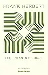

Galerie

Citations
Je ne connais pas la peur, car la peur tue l'esprit. La peur est la petite mort qui conduit à l'oblitération totale. J'affronterai ma peur. Je lui permettrai de passer sur moi, au travers de moi. Et lorsqu'elle sera passée, je tournerai mon oeil intérieur sur son chemin. Et là où elle sera passée, il n'y aura plus rien. Rien que moi.
Souvent, je dois parler autrement que je pense, disait-il. On appelle cela: diplomatie.